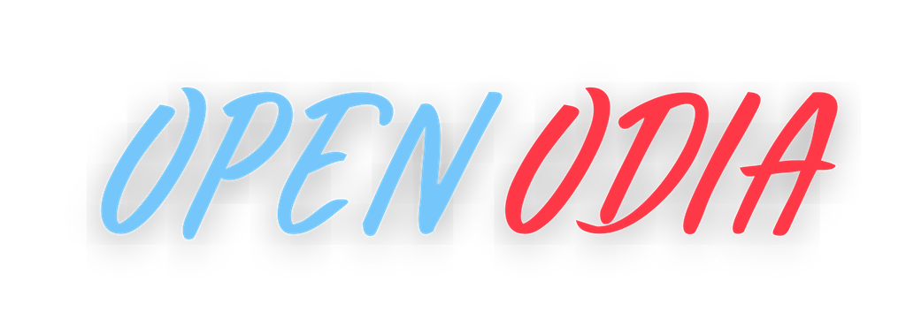

Documentation


About¶
- This documentation is about an open source Python programming language package built for Odia language.
openodiais a Python package which contains various tools on Odia language.- The short term goal of this package is to not make state-of-the-art methods, but to make tools which work.
- The documentation has been written to help you easily copy the code snippets and try out in your Python IDLE or iPython or Jupyter Notebook.
Installation¶
- Set up the library from PyPI using the following command in your terminal or command prompt.
- Requires Python 3.10 or higher.
-
The library is tested on Python 3.10, 3.11, 3.12, 3.13, and 3.14.
Python Installation instruction
You can download Python from Python official website and install on your system.
Using pip¶
pip install openodia
Using uv (recommended)¶
uv is a fast Python package installer and resolver.
# Install uv if you haven't already
pip install uv
# Install openodia
uv pip install openodia
# Or add to your project
uv add openodia
From source¶
If you want to install from the source with latest changes:
git clone https://github.com/soumendrak/openodia.git
cd openodia
uv sync # or: pip install -e .
Features¶
The tools are available in Odia language.
- Odia Alphabets
- Generate random Odia names
- Detect Odia Language
- Word Tokenizer
- Remove stopwords
- Google Translate
- Automatic extractive text summarization
- Add Dictionary corpus
Odia alphabets¶
- To get the Odia alphabets use the
alphabetmodule
from openodia import alphabet
alphabet.all_letters
'''
['ଁ', 'ଂ', 'ଃ', 'ଅ', 'ଆ', 'ଇ', 'ଈ', 'ଉ', 'ଊ', 'ଋ', 'ଌ', 'ଏ', 'ଐ', 'ଓ', 'ଔ',
'କ', 'ଖ', 'ଗ', 'ଘ', 'ଙ',
'ଚ', 'ଛ', 'ଜ', 'ଝ', 'ଞ',
'ଟ', 'ଠ', 'ଡ', 'ଢ', 'ଣ',
'ତ', 'ଥ', 'ଦ', 'ଧ', 'ନ',
'ପ', 'ଫ', 'ବ', 'ଭ', 'ମ',
'ଯ', 'ର', 'ଲ', 'ଳ', 'ଵ', 'ଶ', 'ଷ', 'ସ', 'ହ',
'ଡ଼', 'ଢ଼', 'ୟ', 'ୠ', 'ୡ',
'଼', 'ଽ', 'ା', 'ି', 'ୀ', 'ୁ', 'ୂ',
'ୃ', 'ୄ', 'େ', 'ୈ', 'ୋ', 'ୌ', '୍', 'ୖ', 'ୗ',
'ୢ', 'ୣ', '୦', '୧', '୨', '୩', '୪', '୫', '୬', '୭', '୮', '୯',
'୰', 'ୱ', '୲']
'''
alphabet.consonants
'''
['କ', 'ଖ', 'ଗ', 'ଘ', 'ଙ',
'ଚ', 'ଛ', 'ଜ', 'ଝ', 'ଞ',
'ଟ', 'ଠ', 'ଡ', 'ଢ', 'ଣ',
'ତ', 'ଥ', 'ଦ', 'ଧ', 'ନ',
'ପ', 'ଫ', 'ବ', 'ଭ', 'ମ',
'ଯ', 'ର', 'ଲ', 'ଳ', 'ଵ',
'ଶ', 'ଷ', 'ସ', 'ହ']
'''
alphabet.vowels
'''
['ଅ', 'ଆ', 'ଇ', 'ଈ', 'ଉ', 'ଊ', 'ଋ', 'ଌ', 'ଏ', 'ଐ', 'ଓ', 'ଔ']
'''
alphabet.numbers
'''
['୦', '୧', '୨', '୩', '୪', '୫', '୬', '୭', '୮', '୯']
'''
alphabet.matra
'''
['ଁ', 'ଂ', 'ଃ', '଼', 'ଽ', 'ା', 'ି', 'ୀ', 'ୁ', 'ୂ',
'ୃ', 'ୄ', 'େ', 'ୈ', 'ୋ', 'ୌ', '୍', 'ୖ', 'ୗ', '୰', 'ୱ', '୲']
'''
 Odia names¶
Odia names¶
- You can generate Odia names using the
namemodule with the following syntax:
from openodia import name
name.generate_names()
'''
['ଯଦୁମଣୀ ମାଢ଼ୀ', 'ବାସନ୍ତି ବ୍ରହ୍ମା', 'ପ୍ରବୀଣ ସିଂହ ମୁକ୍କିମ', 'ବୃନ୍ଦାବନ ଧଳ', 'ଅଶ୍ୱିନୀ କିଶୋର ଜଗଦେବ',
'ଶ୍ରୀଯୁକ୍ତ ଇରାଶିଷ ସେଠୀ', 'କୁମାରୀ ସୁମନ ସିଂଦେଓ', 'ସଲିଲ ଅଲ୍ଲୀ ଛତ୍ରିଆ', 'ଦିବାକରନାଥ ରାଧାରାଣୀ ଆଚାର୍ଯ୍ୟ', 'ଦୁର୍ଗା ସୁନ୍ଦରସୁର୍ଯ୍ୟା ପୁଟୀ']
'''
from openodia import name
name.generate_names(20)
'''
['ସାବିତ୍ରୀ ଧଳ', 'ଶ୍ରୀଯୁକ୍ତ ଉତ୍କଳ ପାଳ', 'ଯଦୁମଣି ସୁବାହୁ', 'ପ୍ରେମଲତା ପମ', 'ଗୁରୁ ପୃଷ୍ଟି',
'ଗୀତା ଦାସବର୍ମା', 'କୁମାରୀ ଦୁର୍ଗା ବ୍ରହ୍ମା', 'କୁମାରୀ ପୁପୁଲ ହେମ୍ବ୍ରମ', 'ମକର ସାଇ', 'ଲକ୍ଷ୍ମୀକାନ୍ତ ନନ୍ଦି',
'ଶ୍ରୀ ଦୀନବନ୍ଧୁ ଲୋକ', 'କୁମାରୀ ଜିନା ଗଜପତି', 'ମୃଣାଳ ଭୂଷଣ ଛତ୍ରିଆ', 'ସୁଧାଂଶୁମାଳିନୀ ସିଂହ ସାଲୁଜା', 'ସୁଧାଂଶୁମାଳିନୀ ମହାନନ୍ଦ',
'ସୁମନୀ ନାଥ', 'କୁମାରୀ ନୀତୁ ହିକ୍କା', 'ଶ୍ରୀମତୀ ଲୀଳା କାଡାମ୍', 'ସନାତନ କୁଅଁର', 'କୁମାରୀ କବି ଦାସନାୟକ']
'''
from openodia import name
name.generate_firstnames()
'''
['ଅନିରୁଦ୍ଧ', 'ଦେବରାଜ', 'ଆଶ୍ରିତ', 'ବଦ୍ରି', 'ସଦାଶିବ',
'ପ୍ରଦିପ୍ତ', 'ଧୃବ', 'ଶ୍ରୀନାଥ', 'ସ୍ନିତି', 'ପ୍ରକୃତି']
'''
name.generate_prefixes()
'''
['ଶ୍ରୀଯୁକ୍ତ', 'ଶ୍ରୀମତୀ', 'କୁମାରୀ', 'ଶ୍ରୀମାନ', 'ସୁଶ୍ରୀ', 'ଶ୍ରୀ']
'''
name.generate_middlenames()
'''
['ଲେଖା', 'ଶ୍ରୀ', 'ମାଧବ', 'କେତନ', 'ଯୋଶେଫ୍',
'କେଶରୀ', 'ଭୂଷଣ', 'ରାଧାରାଣୀ', 'ମାନସିଂହ', 'କିଶୋର']
'''
name.generate_surnames()
'''
['ପରିଜା', 'ରଣସିଂହ', 'ମହାପାତ୍ର', 'ରଥ', 'ମହନ୍ତ',
'ବେହେରା', 'ଦେଓ', 'ଧଳ', 'ଦିଆନ', 'ହିମିରିକା']
'''
Detect Odia Language¶
- A binary language classification method used which will return if the input text is in Odia language or in any other non-Odia language.
- Along with this a confidence score also returned. The score provides how confident the library is that it is Odia or Non-Odia.
- There is a
thresholdparameter to the method which can be configured to tune the confidence score threshold after which it will be regarded as Odia. The default value is 0.5.
from openodia import ud
ud.detect_language("hey how are you?")
'''
{'language': 'non-odia', 'confidence_score': 1.0}
'''
ud.detect_language("hey how are you? ନ୍ୟାଚୁରାଲ ଲାଙ୍ଗୁଏଜ ପ୍ରୋସେସିଂ")
'''
{'language': 'odia', 'confidence_score': 0.66666}
'''
ud.detect_language(
"hey how are you? ନ୍ୟାଚୁରାଲ ଲାଙ୍ଗୁଏଜ ପ୍ରୋସେସିଂ",
threshold=0.7)
'''
{'language': 'non-odia', 'confidence_score': 0.333333}
'''
ud.detect_language(
"ନ୍ୟାଚୁରାଲ ଲାଙ୍ଗୁଏଜ ପ୍ରୋସେସିଂ ବା ପ୍ରାକୃତିକ ଭାଷା ପ୍ରକ୍ରିୟାକରଣ କଂପ୍ୟୁଟର ବିଜ୍ଞାନ ଏବଂ "\
"ଆର୍ଟିଫିସିଆଲ ଇଣ୍ଟେଲିଜେନ୍ସର ସେହି ବିଭାଗକୁ କୁହାଯ ାଏ ଯାହା" \
"ମନୁଷ୍ୟର ଭାଷାଗୁଡ଼ିକ ସହ କମ୍ପ୍ୟୁଟରର କଥାବାର୍ତ୍ତାକୁ ବୁଝାଇଥାଏ।")
'''
{'language': 'odia', 'confidence_score': 0.99404}
'''
Word Tokenizer¶
- To tokenize odia text into multiple words or tokens
word_tokenizermodule can be used.
from openodia import ud
ud.word_tokenizer(
"କ୍ୱାଣ୍ଟମ କମ୍ପ୍ୟୁଟିଙ୍ଗ, ହେଉଛି ଏକ ଉଦୀୟମାନ ହାର୍ଡ଼ୱେର ଏବଂ ସଫ୍ଟୱେରର ପ୍ରଯୁକ୍ତିବିଦ୍ୟା," \
"ଯାହା କଠିନ ଗାଣିତିକ ସମସ୍ୟାଗୁଡ଼ିକର ସମାଧାନ ପାଇଁ ଉପ-ପାରମାଣବିକ ଘଟଣାଗୁଡ଼ିକର ଉପଯୋଗ କରିଥାଏ ।[୧]")
'''
['କ୍ୱାଣ୍ଟମ', 'କମ୍ପ୍ୟୁଟିଙ୍ଗ', 'ହେଉଛି', 'ଏକ', 'ଉଦୀୟମାନ', 'ହାର୍ଡ଼ୱେର', 'ଏବଂ',
'ସଫ୍ଟୱେରର', 'ପ୍ରଯୁକ୍ତିବିଦ୍ୟା', 'ଯାହା', 'କଠିନ', 'ଗାଣିତିକ', 'ସମସ୍ୟାଗୁଡ଼ିକର',
'ସମାଧାନ', 'ପାଇଁ', 'ଉପ', 'ପାରମାଣବିକ', 'ଘଟଣାଗୁଡ଼ିକର', 'ଉପଯୋଗ',
'କରିଥାଏ', '।', '୧']
'''
Sentence Tokenizer¶
- Tokenize a paragraph into multiple sentences.
- Only working on full stop.
from openodia import ud
ud.sentence_tokenizer()
Remove stopwords¶
- Frequently occurring words in a language are called as stopwords. Using the below function you can remove the stopwords.
- Internally this method calls the
word_tokenizemethod to get tokens from the text. - As most of the time processing happens in list by default a list of strings will be returned.
from openodia import ud
ud.remove_stopwords("ରାମ ଓ ସୀତା ଆମକୁ ଆଶୀର୍ବାଦ ଦେଇଛନ୍ତି")
'''
['ରାମ', 'ସୀତା', 'ଆମକୁ', 'ଆଶୀର୍ବାଦ']
'''
ud.remove_stopwords("ରାମ ଓ ସୀତା ଆମକୁ ଆଶୀର୍ବାଦ ଦେଇଛନ୍ତି ", get_str=True)
'''
'ରାମ ସୀତା ଆମକୁ ଆଶୀର୍ବାଦ'
'''
ଓ and ଦେଇଛନ୍ତି are removed from the text.
Translation¶
- The translation module is a wrapper on top of Google Translate API.
- There are two translation methods provided:
odia_to_other_langandother_lang_to_odia
other_lang_to_odia¶
- As the name suggests this function can be used to translate from any other language to Odia language.
- If you are translating from any other language other than English, please provide the language code of it.
from openodia import other_lang_to_odia
other_lang_to_odia("hello! feeling good?")
'''
'ନମସ୍କାର!ଭଲ ଲାଗୁଛି?'
'''
other_lang_to_odia("शेयर बाज़ार एक ऐसा बाज़ार है जहाँ कंपनियों के शेयर खरीदे-बेचे जा सकते हैं।", source_language_code="hi")
'''
'ଷ୍ଟକ୍ ମାର୍କେଟ୍ ହେଉଛି ଏକ ବଜାର ଯେଉଁଠାରେ କମ୍ପାନୀଗୁଡିକ କିଣାଯାଇପାରିବ |'
'''
odia_to_other_lang¶
- This function can be used to translate an Odia text into another language.
- The same language code you can choose from as provided above.
- By default, the function will translate to English language.
from openodia import odia_to_other_lang
odia_to_other_lang("ନମସ୍କାର!ଭଲ ଲାଗୁଛି?")
'''
'Hello! Sounds good?'
'''
Automatic extractive text summarization¶
Extracts the important summary snippet of a given text.
from openodia import WordFrequency
wf = WordFrequency(
text="ଭାରତୀୟ ସର୍ବୋଚ୍ଚ ନ୍ୟାୟାଳୟ, ଭାରତର ଉଚ୍ଚତମ ନ୍ୟାୟିକ ଅନୁଷ୍ଠାନ ଅଟେ ଏବଂ ଭାରତୀୟ ସମ୍ବିଧାନ ଅଧୀନସ୍ଥ "
"ସର୍ବୋଚ୍ଚ ନ୍ୟାୟାଳୟ ଅଟେ । "
"ଏହା ସର୍ବ ବରିଷ୍ଠ ସାମ୍ବିଧାନିକ ନ୍ୟାୟାଳୟ ଅଟେ ଏବଂ ଏହି ନ୍ୟାୟିକ ପୁନରାବଲୋକନର କ୍ଷମତା ରହିଛି । "
"ଭାରତର ମୁଖ୍ୟ ବିଚାରପତି ଏହାର ମୁଖ୍ୟ ଅଟନ୍ତି । ତତ୍ସହିତ ଏଥିରେ ସର୍ବାଧିକ ୩୪ ଜଣ ବିଚାରପତି ଅଛନ୍ତି । "
"ମୁଖ୍ୟ, ଅପିଲୀୟ ତଥା ପରାମର୍ଶିକ ଆଦି ଅଧିକାରକ୍ଷେତ୍ର ମାଧ୍ୟମରେ ଏହାର ବିସ୍ତୃତ କ୍ଷମତା ରହିଛି । "
"ଏହା ଭାରତରେ ସବୁଠାରୁ ଶକ୍ତିଶାଳୀ ଲୋକାନୁଷ୍ଠାନ ବୋଲି ଧରାଯାଇଅଛି । "
"ଦେଶର ସାମ୍ବିଧାନିକ ନ୍ୟାୟାଳୟ ହୋଇଥିବାରୁ, ଏହା ମୁଖ୍ୟତଃ ସଙ୍ଘର ବିଭିନ୍ନ ଉଚ୍ଚ ନ୍ୟାୟାଳୟ ତଥା "
"ଅନ୍ୟାନ୍ୟ ନ୍ୟାୟାଳୟ ଓ "
"ଟ୍ରିବ୍ୟୁନାଲମାନଙ୍କର ରାୟ ବିରୁଦ୍ଧରେ ଅପିଲ୍ ନିଏ । "
"ଏହା ନାଗରିକମାନଙ୍କର ମୌଳିକ ଅଧିକାରର ରକ୍ଷାକରେ ଏବଂ ବିଭିନ୍ନ ସରକାରୀ ଅଧିକାରୀ ତଥା "
"ଦେଶରେ କେନ୍ଦ୍ର ସରକାର ବନାମ ରାଜ୍ୟ ସରକାର କିମ୍ବା ଗୋଟିଏ ରାଜ୍ୟ ସରକାର ବନାମ ଅନ୍ୟ ରାଜ୍ୟ ସରକାର "
"ମଧ୍ୟରେ ବିବାଦର ସମାଧାନ କରେ । "
"ଏକ ପରାମର୍ଶଦାତା ହିସାବରେ, ଏହା ଭାରତୀୟ ସମ୍ବିଧାନ ଅନୁସାରେ ରାଷ୍ଟ୍ରପତିଙ୍କଦ୍ୱାରା ସୂଚୀତ ବିଭିନ୍ନ ବିଷୟବସ୍ତୁ "
"ଉପରେ ଶୁଣାଣି କରିଥାଏ । ")
wf.get_summary() # Auto threshold calculation
'''
'ଭାରତୀୟ ସର୍ବୋଚ୍ଚ ନ୍ୟାୟାଳୟ, ଭାରତର ଉଚ୍ଚତମ ନ୍ୟାୟିକ ଅନୁଷ୍ଠାନ ଅଟେ ଏବଂ ଭାରତୀୟ ସମ୍ବିଧାନ ଅଧୀନସ୍ଥ ସର୍ବୋଚ୍ଚ ନ୍ୟାୟାଳୟ ଅଟେ
ଏହା ସର୍ବ ବରିଷ୍ଠ ସାମ୍ବିଧାନିକ ନ୍ୟାୟାଳୟ ଅଟେ ଏବଂ ଏହି ନ୍ୟାୟିକ ପୁନରାବଲୋକନର କ୍ଷମତା ରହିଛି
ଭାରତର ମୁଖ୍ୟ ବିଚାରପତି ଏହାର ମୁଖ୍ୟ ଅଟନ୍ତି ତତ୍ସହିତ ଏଥିରେ ସର୍ବାଧିକ ୩୪ ଜଣ ବିଚାରପତି ଅଛନ୍ତି
ମୁଖ୍ୟ, ଅପିଲୀୟ ତଥା ପରାମର୍ଶିକ ଆଦି ଅଧିକାରକ୍ଷେତ୍ର ମାଧ୍ୟମରେ ଏହାର ବିସ୍ତୃତ କ୍ଷମତା ରହିଛି
ଏହା ଭାରତରେ ସବୁଠାରୁ ଶକ୍ତିଶାଳୀ ଲୋକାନୁଷ୍ଠାନ ବୋଲି ଧରାଯାଇଅଛି
ଦେଶର ସାମ୍ବିଧାନିକ ନ୍ୟାୟାଳୟ ହୋଇଥିବାରୁ, ଏହା ମୁଖ୍ୟତଃ ସଙ୍ଘର ବିଭିନ୍ନ ଉଚ୍ଚ ନ୍ୟାୟାଳୟ ତଥା ଅନ୍ୟାନ୍ୟ ନ୍ୟାୟାଳୟ ଓ
ଟ୍ରିବ୍ୟୁନାଲମାନଙ୍କର ରାୟ ବିରୁଦ୍ଧରେ ଅପିଲ୍ ନିଏ
ଏହା ନାଗରିକମାନଙ୍କର ମୌଳିକ ଅଧିକାରର ରକ୍ଷାକରେ ଏବଂ ବିଭିନ୍ନ ସରକାରୀ ଅଧିକାରୀ ତଥା ଦେଶରେ କେନ୍ଦ୍ର ସରକାର ବନାମ
ରାଜ୍ୟ ସରକାର କିମ୍ବା ଗୋଟିଏ ରାଜ୍ୟ ସରକାର ବନାମ ଅନ୍ୟ ରାଜ୍ୟ ସରକାର ମଧ୍ୟରେ ବିବାଦର ସମାଧାନ କରେ
ଏକ ପରାମର୍ଶଦାତା ହିସାବରେ, ଏହା ଭାରତୀୟ ସମ୍ବିଧାନ ଅନୁସାରେ ରାଷ୍ଟ୍ରପତିଙ୍କଦ୍ୱାରା ସୂଚୀତ ବିଭିନ୍ନ ବିଷୟବସ୍ତୁ ଉପରେ ଶୁଣାଣି କରିଥାଏ'
'''
wf.get_summary(threshold=3.0) # higher the threshold lesser the summary text
'''
'ଭାରତୀୟ ସର୍ବୋଚ୍ଚ ନ୍ୟାୟାଳୟ, ଭାରତର ଉଚ୍ଚତମ ନ୍ୟାୟିକ ଅନୁଷ୍ଠାନ ଅଟେ ଏବଂ ଭାରତୀୟ ସମ୍ବିଧାନ ଅଧୀନସ୍ଥ ସର୍ବୋଚ୍ଚ ନ୍ୟାୟାଳୟ ଅଟେ
ଏହା ସର୍ବ ବରିଷ୍ଠ ସାମ୍ବିଧାନିକ ନ୍ୟାୟାଳୟ ଅଟେ ଏବଂ ଏହି ନ୍ୟାୟିକ ପୁନରାବଲୋକନର କ୍ଷମତା ରହିଛି
ଦେଶର ସାମ୍ବିଧାନିକ ନ୍ୟାୟାଳୟ ହୋଇଥିବାରୁ, ଏହା ମୁଖ୍ୟତଃ ସଙ୍ଘର ବିଭିନ୍ନ ଉଚ୍ଚ ନ୍ୟାୟାଳୟ ତଥା ଅନ୍ୟାନ୍ୟ ନ୍ୟାୟାଳୟ ଓ
ଟ୍ରିବ୍ୟୁନାଲମାନଙ୍କର ରାୟ ବିରୁଦ୍ଧରେ ଅପିଲ୍ ନିଏ
ଏହା ନାଗରିକମାନଙ୍କର ମୌଳିକ ଅଧିକାରର ରକ୍ଷାକରେ ଏବଂ ବିଭିନ୍ନ ସରକାରୀ ଅଧିକାରୀ ତଥା ଦେଶରେ କେନ୍ଦ୍ର ସରକାର ବନାମ
ରାଜ୍ୟ ସରକାର କିମ୍ବା ଗୋଟିଏ ରାଜ୍ୟ ସରକାର ବନାମ ଅନ୍ୟ ରାଜ୍ୟ ସରକାର ମଧ୍ୟରେ ବିବାଦର ସମାଧାନ କରେ'
'''
 Offline Dictionary¶
Offline Dictionary¶
- An offline dictionary will be downloaded as soon as you install this library.
- Therefore, when you translate from English to Odia words/phrases it will hit the offline dictionary first, if not found it will go for the Google translate API.
- Google Translate API responses have been cached, therefore from the 2nd call onwards on the same term(s) it will fetch fast from the local in-memory cache.
- We have used LRU (Least Recently Used) cache with a maximum size of 10000.
English to Odia translation Workflow
Therefore, we have three flows on English to Odia dictionary translation:
- English text → Check in Offline dictionary → Found → Return result
- English text → Check in Offline dictionary → Not Found → Check in Cache → Found → Return result from Cache
- English text → Check in Offline dictionary → Not Found → Check in Cache → Not Found → Hit Google Translate API → Update the Cache → Return result
 Known Issues¶
Known Issues¶
- There are few issues in the code an be found here.
- Contributions are highly welcomed.

Roadmap¶
In the upcoming future the following features will be implemented in the package.
- Add English-Odia Parallel corpus
- Add Odia Monolingual corpus
- Add NER dataset of places, actors, etc.
- Robust paragraph to sentence tokenizer covering edge cases
- Stemming tool
- Customized stopword support
- Add OdiaBert
- Improve the CI/CD pipeline
Quote
"In my dream of the 21st century for the State, I would have young men and women who put the interest of the State before them. They will have pride in themselves, confidence in themselves. They will not be at anybody’s mercy, except their own selves. By their brains, intelligence and capacity, they will recapture the history of Kalinga." - Biju Pattnaik
To cite this page, please use:
@misc{OpenOdia,
author = {Soumendra Kumar Sahoo},
title = {OpenOdia Documentation},
howpublished = {\url{https://www.openodia.soumendrak.com/}},
year = {2021}
}